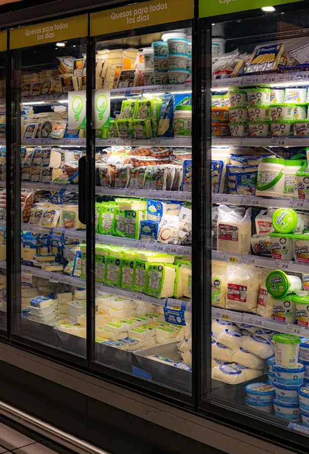
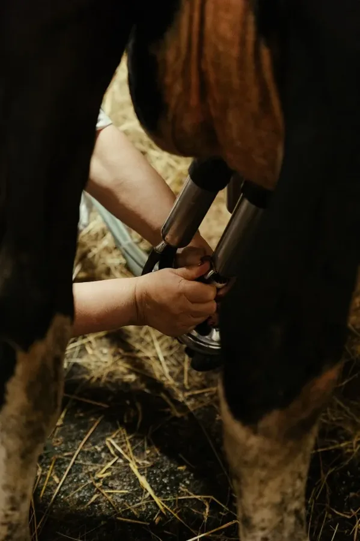
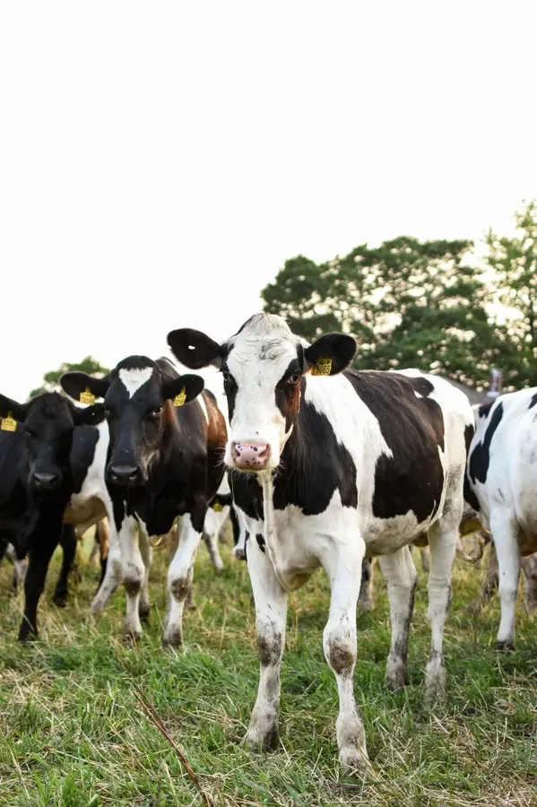

Precision Composition Control for Every Dairy Process
In dairy processing, fractions of a percent determine profitability. A 0.1% deviation in milk fat standardization can mean thousands of dollars lost per day in butter fat giveaway. USTECH's hygienic inline NIR systems deliver continuous, real-time fat, protein, and moisture measurements throughout your production line — enabling closed-loop standardization that turns compositional variability into a controlled, optimized process.
Dairy processors operate in a uniquely demanding environment: raw milk composition fluctuates hourly, hygiene requirements are absolute, and the difference between profit and loss often hides inside a fraction of a percent. Yet many plants still rely on periodic grab samples and 30-minute lab turnaround cycles to make standardization decisions — creating a gap between what's happening in the pipe and what the operator knows.
Butter Fat Giveaway & Yield Loss
Without inline composition data, operators over-standardize by adding excess cream to guarantee fat targets. This invisible giveaway of high-value butter fat costs mid-size plants $200,000—$500,000 annually in preventable yield loss.
Hygiene, CIP Compatibility & Downtime
Daily Clean-in-Place (CIP) cycles use caustic chemicals and 140—C steam. Inline sensors must survive these conditions without removal, recalibration, or degradation — disqualifying most conventional instrumentation.
Compliance & Traceability Pressure
Food safety regulations and audits increasingly demand continuous process documentation over lab spot-checks. The expectation is shifting from testing isolated samples to monitoring the entire production run.
From the moment raw milk enters your facility to the final moisture check on spray-dried powder, every process stage presents an opportunity to capture value through real-time composition intelligence. USTECH solutions are engineered to operate inside your hygienic flow lines — not beside them.
Grade Every Tanker. Price Every Load Accurately.
Raw milk composition varies significantly between farms, seasons, and breeds. By deploying inline NIR measurement at the receiving dock, you verify fat, protein, lactose, and total solids content of every incoming tanker — enabling accurate payment calculations based on actual composition rather than estimated averages.
Identify adulteration, dilution, or off-specification loads before they contaminate your processing silo. Real-time screening replaces the 30-minute wait for laboratory Milkoscan results, accelerating tanker turnaround and reducing dock congestion.
Eliminate Fat Giveaway with Closed-Loop Control
Mount inline NIR sensors immediately downstream of the cream separator. The system continuously measures fat and protein content in both the skim and cream streams, feeding real-time data directly to your standardization PLC. Dosing valves adjust automatically to maintain fat levels within —0.05% of target — a precision level that manual sampling simply cannot achieve.
The financial impact is immediate and measurable: every 0.05% reduction in fat giveaway across a plant processing 500,000 liters per day recovers approximately $1,200 in daily butter fat value.


Maximize Curd Yield. Minimize Fat Losses in Whey.
In cheese production, every gram of fat lost to the whey stream is profit leaving your plant. Inline reflectance sensors mounted on whey discharge lines detect residual fat levels continuously, alerting operators when curd cutting parameters need adjustment.
For yogurt and fermented product lines, continuous protein and total solids monitoring ensures consistent texture and mouthfeel across production runs, reducing batch-to-batch variability that leads to consumer complaints or product downgrades.
Maximize Powder Weight Without Exceeding Moisture Limits
Milk powder is sold by weight, but moisture content is legally capped (typically 3.5—4.0% for SMP). Every tenth of a percent below the legal limit represents sellable weight you're evaporating away as wasted energy. Conversely, exceeding the limit risks regulatory rejection and microbial growth.
USTECH inline NIR sensors mounted at the spray dryer outlet or fluid bed exit provide continuous moisture tracking, enabling operators to target the optimal moisture level with precision — maximizing saleable weight per ton while maintaining full regulatory compliance.

Engineered for Dairy.
Full CIP Compatibility — No Removal Required
Our sensors are manufactured from 316L food-grade stainless steel with sapphire optical windows. They withstand daily high-pressure steam cleaning at 140—C, caustic and acid rinses, and IP69K washdowns — without disassembly, recalibration, or drift.
Sanitary Design Standards
Optical interfaces follow 3-A and EHEDG hygienic design guidelines with crevice-free construction and EPDM food-safe seals, ensuring zero product accumulation or bacterial harbor points inside active milk flow lines.
AutoCal — Self-Adjusting Calibrations
Seasonal variations in raw milk composition can degrade calibration accuracy over time. USTECH's CaliX platform features AutoCal technology: by linking your laboratory reference results with the corresponding spectral database, calibration curves adjust automatically — maintaining measurement accuracy without manual intervention.
Direct PLC Integration for Closed-Loop Control
Measurement without action is just data. USTECH sensors communicate directly with your process control systems via OPC UA, Modbus TCP, or 4—20 mA analog outputs, enabling real-time automated adjustments to separation, standardization, and drying parameters.
Total Composition Control from Farm to Table
USTECH technology monitors and standardizes raw milk quality across the entire dairy cycle — optimizing parameters from animal nutrition and milking to processing, distribution, and consumer product manufacturing.
See What Closed-Loop Dairy Intelligence Looks Like
Whether you're standardizing liquid milk, optimizing cheese yield, or controlling spray dryer moisture, our dairy application specialists can map USTECH technology to your specific process flow — and quantify the ROI before you invest.